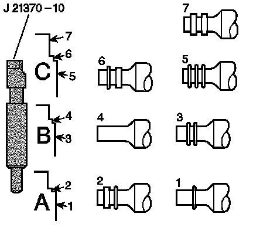
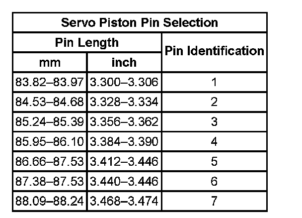

Low and Reverse Band Servo Piston Pin Specifications
Low and Reverse Band Servo Piston Pin Specifications
Refer to the chart in order to determine the correct low and reverse band servo pin length to use. A, B and C on the chart refer to markings on the J 21370-10 Band Apply Pin Gauge. Numbers 1-7 match the correct piston pin length to the J 21370-10 land indicated by the low and reverse band servo pin inspection procedure.

Low and Reverse Band Servo Piston Pin Specifications:
